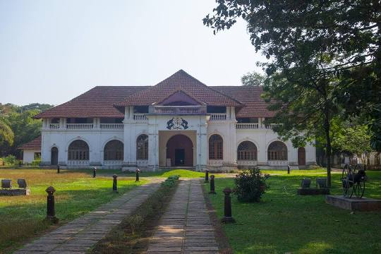

Places to visit in Thrissur

Kerala is a paradise on earth and the major attractions in Munnar, Alleppey, and Kumarakom would prove that well by letting you witness its beauty. But, if you also wish to get a glimpse of the state’s cultural beauty in all its glory, then you’ve got to include these best places to visit in Thrissur in your bucket list. Besides, there are some less commercialized places like Mala, Krishan Kotta, and Kaladi which you can also visit to know about the glorious past. When in Krishnan Kotta, don’t forget to taste the delicious fish Karimeen which is the official fish of Kerala. With innumerable temples, hillocks, beaches, and more, Thrissur has something for every type of traveler. So, irrespective of whether you’re a culture vulture or a nature admirer, take a note of these best tourist places in Thrissur that you must visit on your next trip down south.
- Vadakkunnathan Temple
- Shakthan Thampuran Palace 
- Athirappilly Waterfalls
- Guruvayur Sree Krishna Temple
- Punnathur Kotta

Being the oldest and most famous temple of Lord Shiva in Kerala, Vadakkunnathan Temple is amongst the top Thrissur tourist places that you must include in your trip itinerary. The classic architecture and murals on the inside of the temple offer a perfect glimpse of the cultural side, which make it one of a kind in the city.
Location: Swaraj Round N, Thekkinkadu Maidan, Thrissur,Kerala
No list of best places to visit in Thrissur can ever be complete without including the Shakthan Thampuran Palace in it. Built by Raja Rama Varma IC in 1791, the palace’s Dutch-style architecture is a captivating sight to behold, especially for art admirers. Though, what makes it unique are the attractions inside it like a small museum that showcases antiquities and old relics.
Location:Stadium Rd, Chembukkav, Thrissur, Kerala

Located 60 km from the city, Athirapally Falls is amongst the top places to see in Thrissur. The 80 feet high and 330 feet wide falls come all the way from the Anamudi Mountains and are often called as the Niagara Falls of India. If you’re looking for a blissful escape, don’t think much and head right to this place.
Location:Athirappilly, Chalakudy Taluk, Thrissur, Kerala

Home to the historic legends, Guruvayur Sree Krishna Temple is not only one of the best places to visit in Thrissur, but also the most popular. From the architectural beauty of the temple to the minute crafts within, everything is worth witnessing, especially when lit.
Location: Guruvayur Devaswom, East Nada, Guruvayur, Kerala
This is a famous elephant sanctuary, which is located only 3 km away from the Guruvayoor Temple. From spotting elephants in their natural habitat to watching them do their chores, there’s a lot to do here that would keep you entertained. You can visit here right after the temple and end your evening on a sweet note. Amongst all the places to see in Thrissur, this one is a must visit.
Location:Kottapadi Road, Trishul, Iringaprom, Kerala